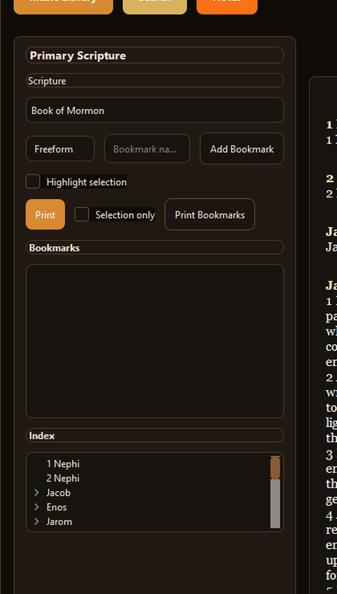
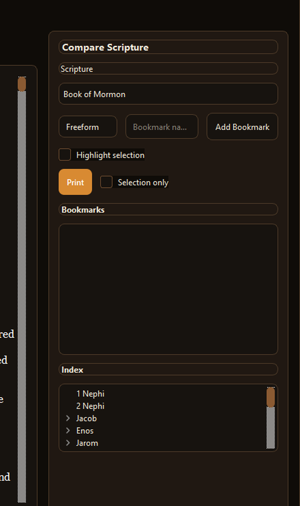

Scripture Reader
Read and compare scripture sources side by side with synchronized study controls and quick navigation.

Free offline-first scripture study assistant
Latterday Lens is a Windows desktop app for private scripture study with a dual-pane reader, search, notes, bookmarks, journal tools, and bundled study media.
Read and compare scripture sources side by side with synchronized study controls and quick navigation.
Search across included scripture sources and jump into useful passages without needing an online account.
Save study spots, highlight selections, write notes, and keep a local journal on your own computer.
This full release includes the bundled scripture/audio library so the app is useful immediately after extraction.



Version: 0.8.0
Platform: Windows desktop app
File: Portable ZIP, 825.0 MB
Cost: Free
How to run: Download the ZIP, extract it, then open Latterday Lens.exe.
Privacy: Notes, bookmarks, settings, and indexes stay on your computer.
Latterday Lens is new and not code-signed yet, so Microsoft Defender SmartScreen may warn that it is not commonly downloaded. Only continue if you started the download from cmforgedbyfire.com or the official cmforgedbyfire GitHub release.


Offline use: Latterday Lens runs locally after download. Optional local AI features depend on what is installed on the user's PC.
Storage: User notes, bookmarks, and generated indexes are stored in the user's local app data folder.
Feedback: Use the support page for bugs, download issues, and feature requests.